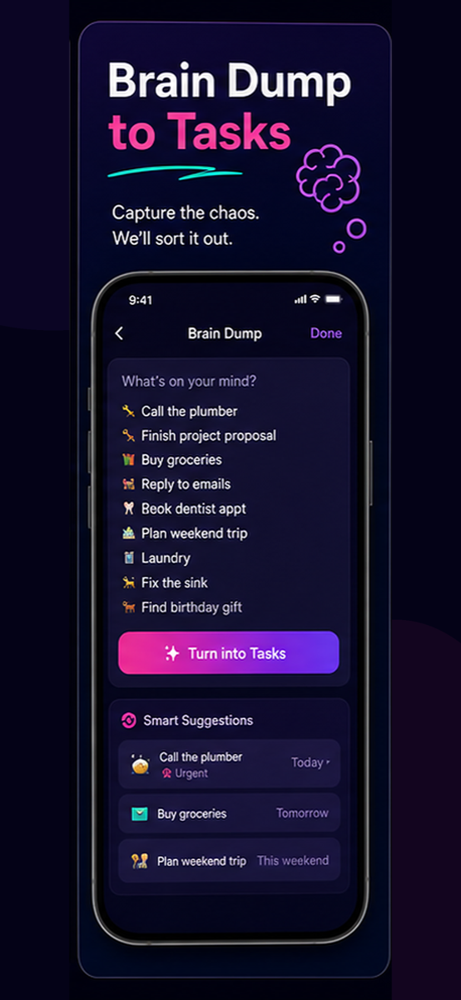
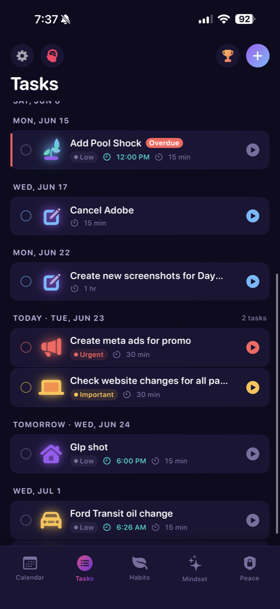
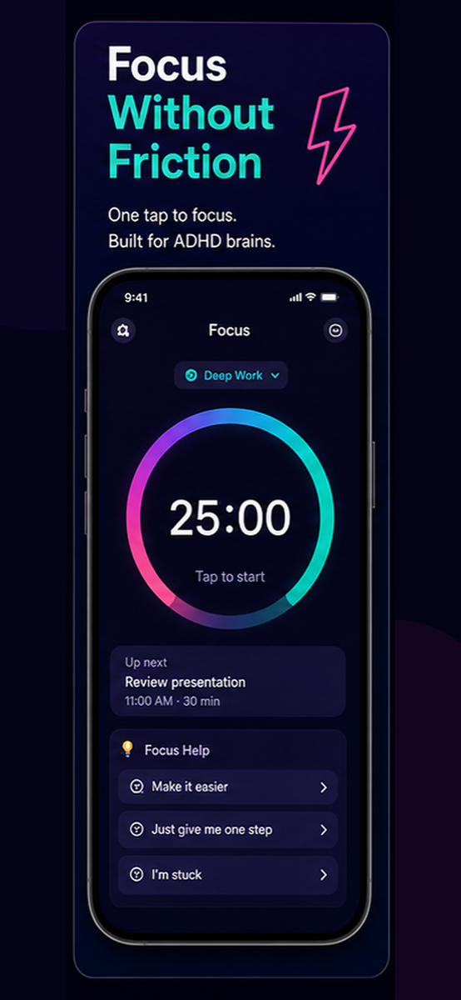
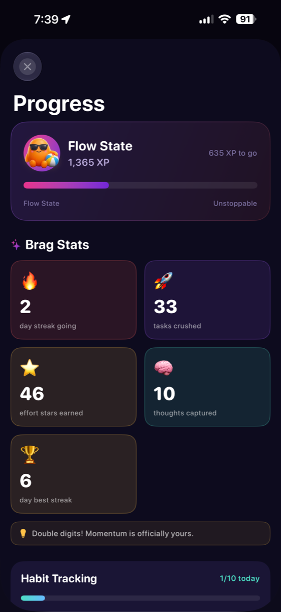
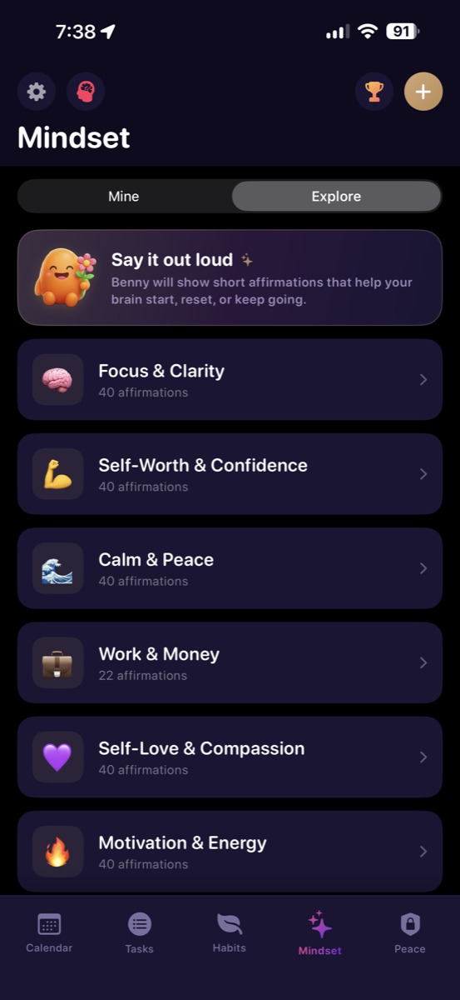

Turn brain dumps into tasks
Capture everything. Daymapr helps sort it into the next useful move.

Daymapr for ADHD brains
Capture the chaos, turn it into tasks, and move through the day with a clear plan that feels fun instead of heavy.
Real app, real flow
See timed tasks, calendar events, habits, reminders, and focus sessions in one clear daily view.




Meet Benny
Benny helps turn scattered thoughts into a mapped-out plan, nudging you from brain dump to focus to done.
From chaos to action

Capture everything. Daymapr helps sort it into the next useful move.

One timer, one task, and one clear way to restart when you drift.

Close the loops that keep taking up space in your head.
App Store energy


Progress that feels good
Track progress without digging. Daymapr keeps momentum, habit streaks, and mindset support easy to find.



Daymapr
For ADHD brains, busy lives, and that moment when the whole day needs a reset.